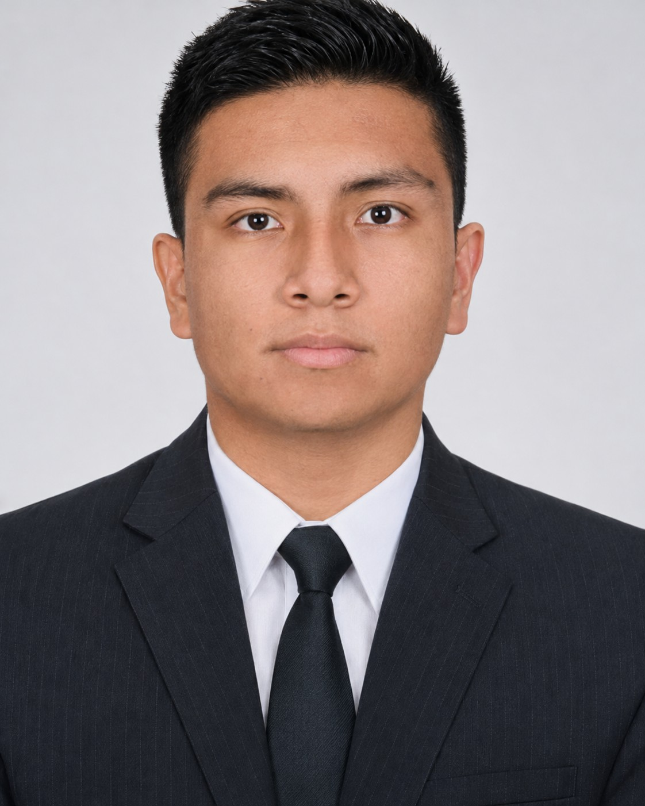

2026 – Actualidad
Ingeniería Civil
Universidad Mariano Gálvez de Guatemala
Primer año · En cursoEstudiante de Ingeniería Civil y dibujante técnico con experiencia en planos de construcción, pavimentos industriales, cuantificaciones y diseño para corte CNC.

Universidad Mariano Gálvez de Guatemala
Primer año · En cursoLiceo Integral de Enseñanza Comercial
Instituto Técnico Laboral Kinal
Uso de herramientas de dibujo, cuantificación y preparación de diseños para fabricación.
Planos arquitectónicos y estructurales, secciones de pisos, pavimentos, cuantificaciones, identificación de fisuras y documentación GPON.
Trabajo en equipo, comunicación efectiva, resolución de problemas, gestión del tiempo y adaptabilidad.
Idiomas: Español (nativo) · Inglés (básico)
Selección de proyectos en los que he participado. Se incorporarán imágenes y documentación técnica únicamente cuando cuente con autorización para su publicación.
Desarrollo de planos técnicos para un proyecto de pisos y pavimentos industriales.
Dibujo técnicoElaboración de planos y detalles constructivos relacionados con el proyecto.
Planos industrialesElaboración de documentación gráfica y planos técnicos para pisos industriales.
ConstrucciónDesarrollo de planos para identificación y localización de fisuras en concreto.
Mapeo de fisurasApoyo técnico y documentación de remodelaciones comerciales menores y mayores.
RemodelaciónParticipación en el proyecto de refuerzo de la estructura metálica de cubierta.
Estructuras metálicasDigitalización y actualización de planos finales vinculados a infraestructura de fibra óptica.
TelecomunicacionesInteresado en oportunidades profesionales relacionadas con dibujo técnico, ingeniería civil y construcción.
Referencias laborales y personales disponibles a solicitud. Cursos, certificaciones y material fotográfico de proyectos: pendientes de incorporar.